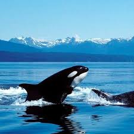
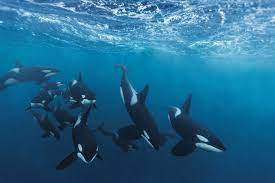
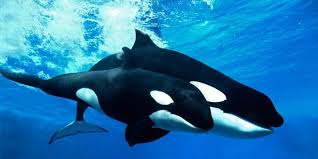

|  | Usted los podrá encontrar en las aguas más frías cerca de la región del Ártico, también encontrará a otros disfrutando de las aguas más cálidas en los lugares tropicales. Las ballenas orcas tienen diferentes hábitos, algunos de ellos viven en alta mar y tienen una residencia permanente. Otros son transitorios, lo que significa que se mueven continuamente y su hogar es cualquier lugar que quieran, siempre y cuando encuentran alimento. Las ballenas asesinas que viven en aguas profundas si se encuentran en necesidad de alimentos, por lo general terminan más cerca de la costa. Encontrará gran cantidad de grupos a lo largo de las aguas de Canadá y Alaska. Muchas personas disfrutan viendo a lo largo de la costa de California también. Los que residen en las áreas de agua fría estan limitadas en el espacio debido a la abundancia de hielo, ya que no son capaces de navegar muy lejos con él. Es por esto que muchos de ellos emigran a otro lugar durante los peores momentos del año. |
Aunque se sabe que las orcas migran, los patrones exactos que siguen no se entienden completamente. Los investigadores saben que se encuentran tanto en la Columbia Británica y en el estado de Washington en los EE.UU. Sin embargo, no se sabe donde muchos de ellos van después de eso. Algunos dispositivos de seguimiento han encontrado algunos de ellos a en ríos de agua dulce en los Estados Unidos. El seguimiento y la investigación, está previsto para ayudar a saber donde estas ballenas orcas pasan el resto de su tiempo.
 